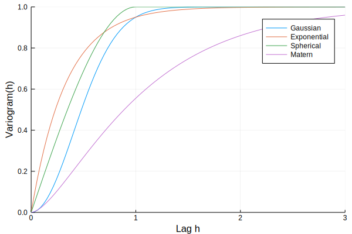
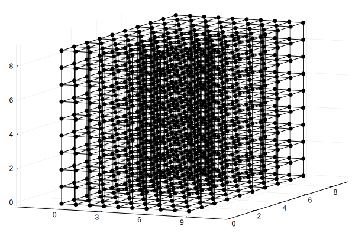
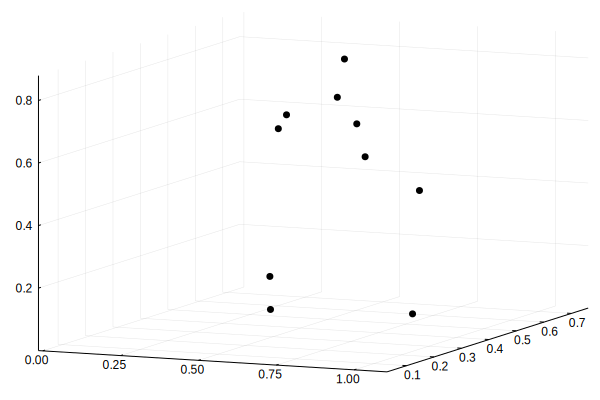
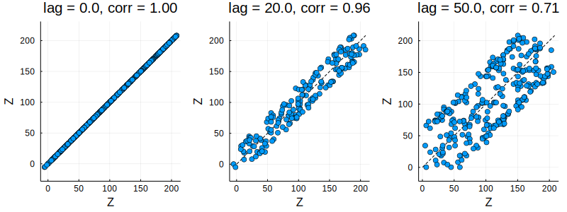

Plotting
GeoStats.jl is integrated with the Julia Plots.jl project. This means that many objects defined in the package can be plotted directly without data format conversions.
For example, below we plot various theoretical variograms with the plot command from Plots.jl:
using GeoStats
using Plots
plot(GaussianVariogram(), maxlag=3., label="Gaussian")
plot!(ExponentialVariogram(), maxlag=3., label="Exponential")
plot!(SphericalVariogram(), maxlag=3., label="Spherical")
plot!(MaternVariogram(), maxlag=3., label="Matern")
and various spatial domains:
plot(RegularGrid{Float64}(10,10,10))
plot(PointSet(rand(3,10)))
Besides plotting GeoStats.jl objects directly, a few other plots are provided for exploring spatial data.
hscatter
A hscatter plot between two variables var1 and var2 (possibly with var2 = var1) is a simple scatter plot in which the dots represent all ordered pairs of values of var1 and var2 at a given lag h.
Z = [10sin(i/10) + j for i in 1:100, j in 1:200]
Ω = RegularGridData{Float64}(OrderedDict(:Z=>Z))
hscatter(sample(Ω, 500), :Z, lags=[0.,20.,50.])
varplane
A variogram plane (i.e. varplane) plot is a visualization that displays a collection of directional variograms for all angles in a given plane for 2D or 3D spatial data.
# horizontal plane ==> theta=0, phi=90
varplane(Ω, :Z, theta=0, phi=90)